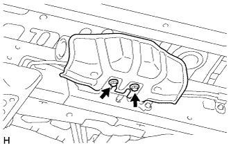
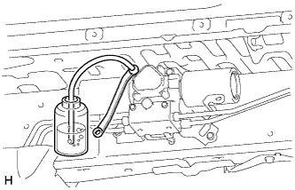
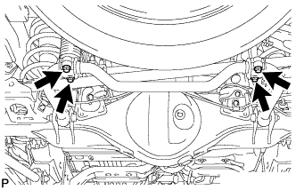
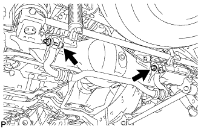
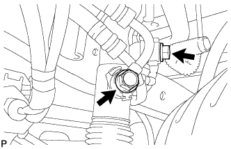
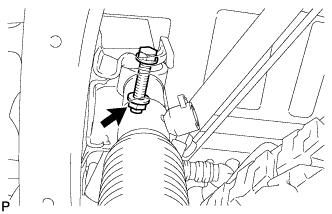
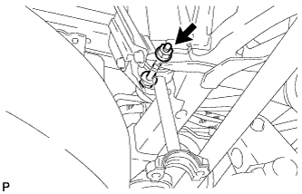

ЗАДНИЙ СТАБИЛИЗАТОР ПОПЕРЕЧНОЙ УСТОЙЧИВОСТИ (для моделей с KDSS) > СНЯТИЕ |
| 1. СНИМИТЕ ЛЕВЫЙ ПОРОГ В СБОРЕ (для 5-дверных моделей) |
Для моделей с подсветкой:
Отсоедините 2 разъема.
Выверните 6 болтов и снимите боковой порог.
| 2. СНИМИТЕ ЗАЩИТУ РАСПРЕДЕЛИТЕЛЯ СТАБИЛИЗАТОРА |
|  |
Выверните 2 болта и снимите защиту распределителя стабилизатора.
| 3. СЛЕЙТЕ ЖИДКОСТЬ ДЛЯ ТРАНСМИССИИ |
|  |
Ослабьте прокачной штуцер на корпусе блока управления стабилизаторами с гидроаккумулятором в сборе и слейте жидкость для подвески.
Затяните прокачной штуцер.
| 4. СНИМИТЕ НИЖНИЙ КРОНШТЕЙН ЗАДНЕГО СТАБИЛИЗАТОРА |
|  |
Выверните 4 болта и снимите 2 нижних кронштейна заднего стабилизатора.
| 5. СНИМИТЕ ЗАДНИЙ СТАБИЛИЗАТОР ПОПЕРЕЧНОЙ УСТОЙЧИВОСТИ В СБОРЕ |
|  |
Выверните 2 болта и снимите 2 гайки и штангу заднего стабилизатора.
Снимите 2 втулки стабилизатора со штанги заднего стабилизатора.
| 6. ОТСОЕДИНИТЕ РЕГУЛИРОВОЧНУЮ ТРУБКУ ЗАДНЕГО СТАБИЛИЗАТОРА В СБОРЕ |
|  |
Выверните 2 пустотелых соединительных болта-штуцера, снимите 2 прокладки выпускных отверстий и отсоедините регулировочную трубку заднего стабилизатора от цилиндра управления заднего стабилизатора.
| 7. СНИМИТЕ ЦИЛИНДР УПРАВЛЕНИЯ ЗАДНЕГО СТАБИЛИЗАТОРА |
|  |
Отверните гайку и снимите болт и цилиндр управления заднего стабилизатора.
Снимите 2 колпачка прокачных штуцеров с цилиндра управления заднего стабилизатора.
| 8. СНИМИТЕ СТОЙКУ ЗАДНЕГО СТАБИЛИЗАТОРА В СБОРЕ |
|  |
Отверните гайку и снимите болт и стойку заднего стабилизатора в сборе.